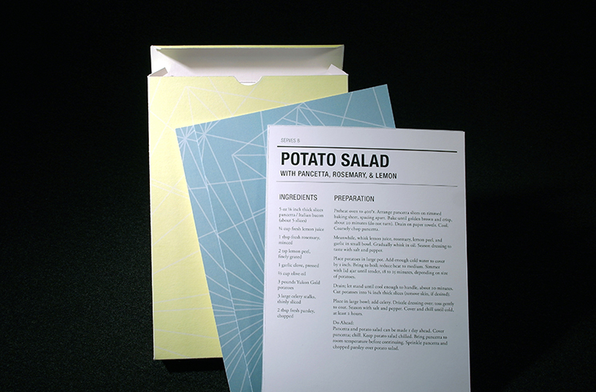
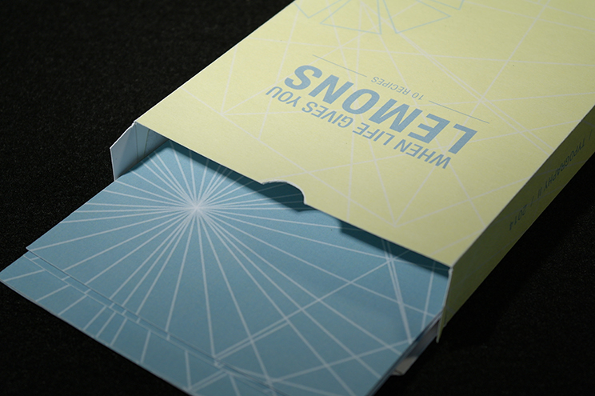
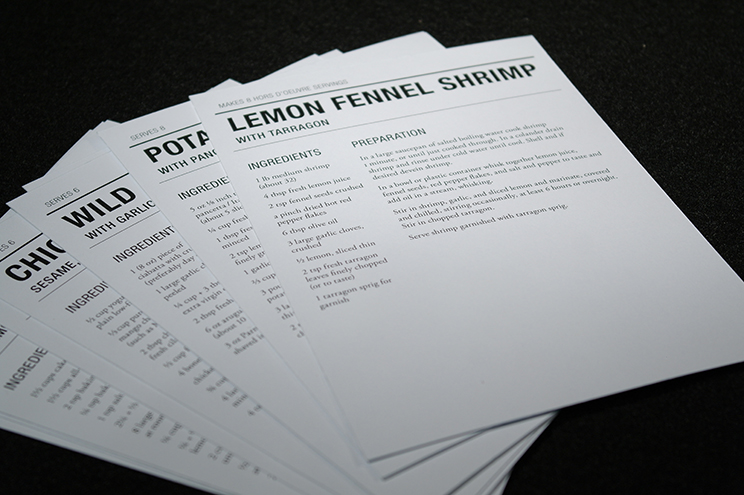
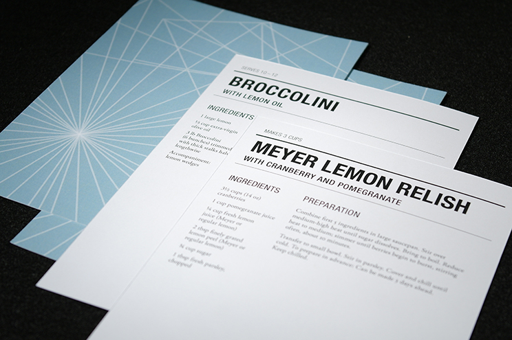

Recipe Cards: When Life Gives You Lemons
A set of ten lemon-themed recipe cards and accompanying packaging. I drew inspiration from the shape of cirtus wedges, and created a light, playful design based on that geometry.
A project for Typography II at MassArt.